Applications
-
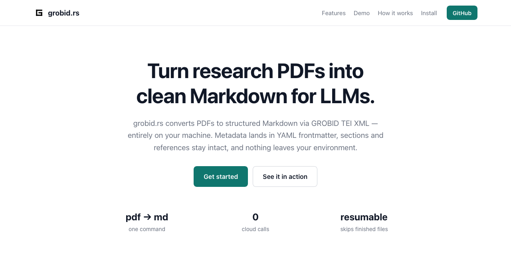
Grobid.rs Convert PDF articles to Markdown via GROBID TEI XML — locally. Source -
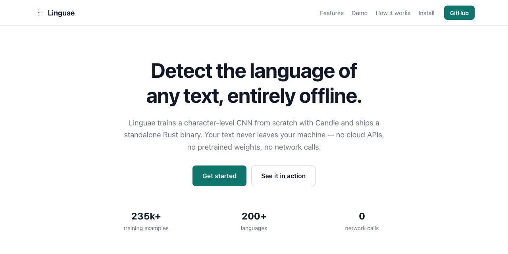
Linguae Detect the language of text with a local character-level model. Source -
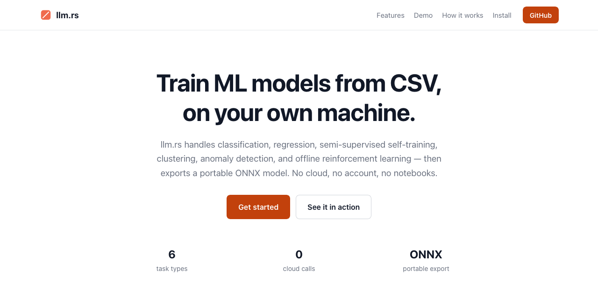
llm.rs Train ML models from CSV files and export portable ONNX models — all locally. Source -
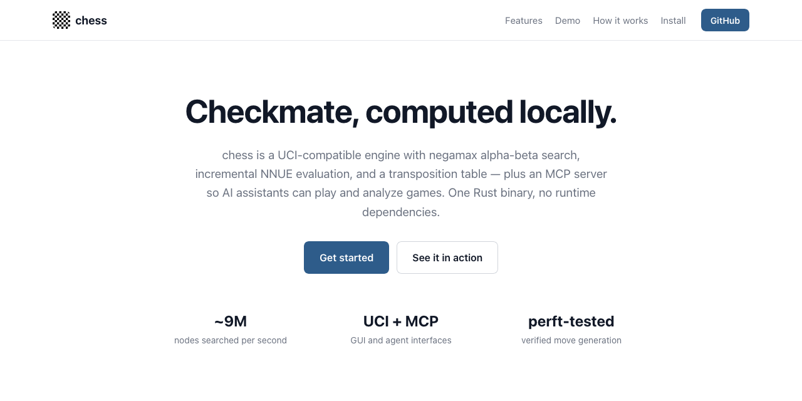
Chess UCI chess engine in Rust — alpha-beta search, NNUE evaluation, and an MCP server. Source -
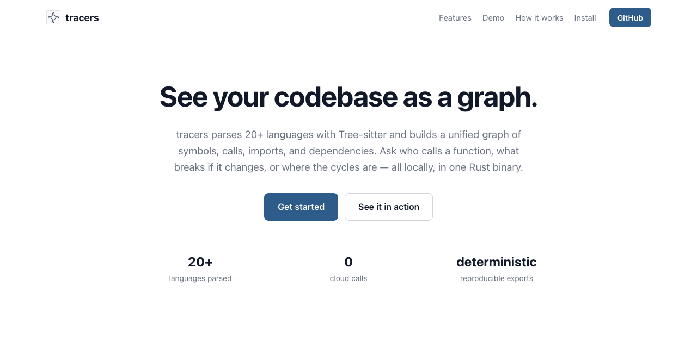
Tracers High-performance, multi-language code intelligence and graph analysis. Source -
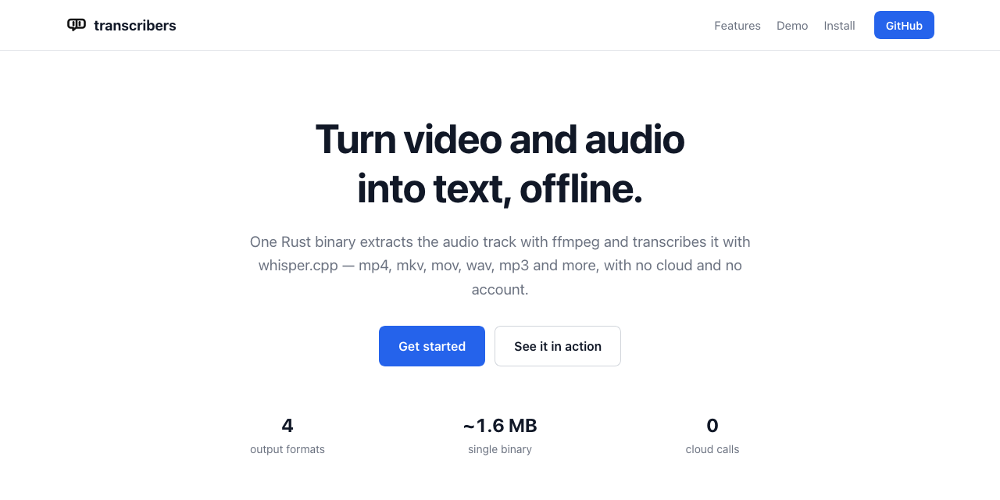
Transcribers Extract transcripts from video and audio locally with ffmpeg and whisper.cpp. Source -
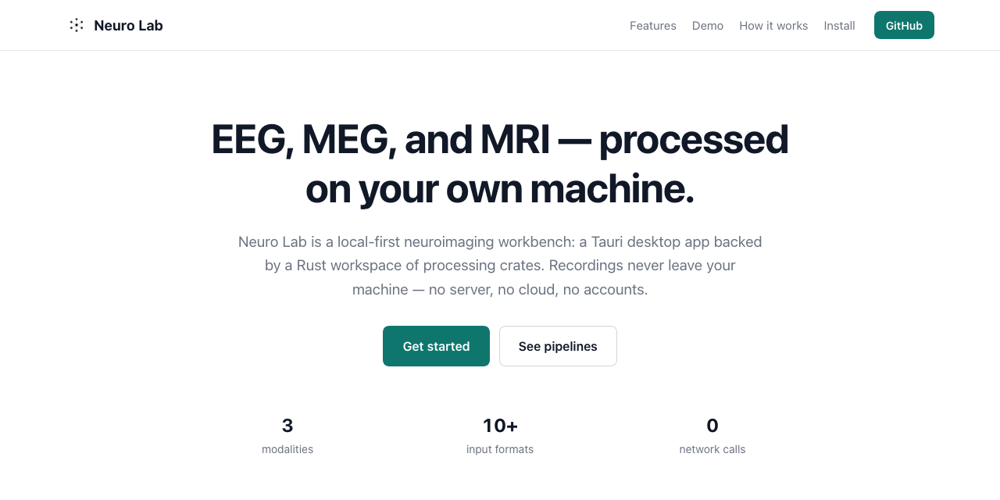
Neuroimaging Lab Local-first desktop workspace for EEG, MEG, and MRI research data. Source -
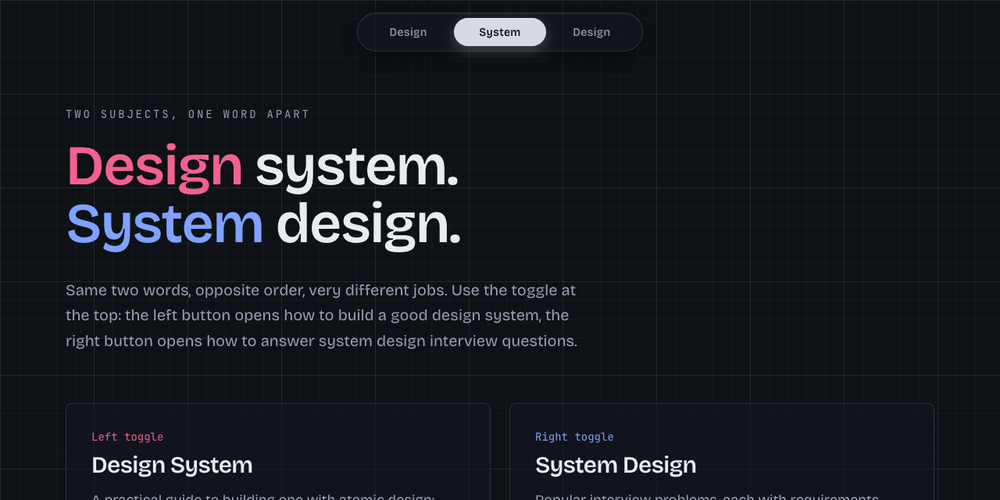
Design (System) Design A design system monorepo for consistent, accessible UI components. Source -
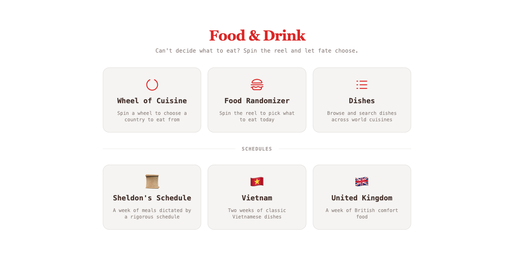
Food & Drink A fast food-picker: country wheel, dish reel, menus, and weekly schedules. Source -
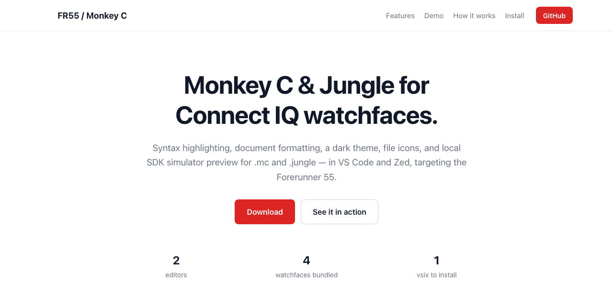
Forerunner 55 Connect IQ watchfaces and Monkey C tooling for the Garmin Forerunner 55. Source -
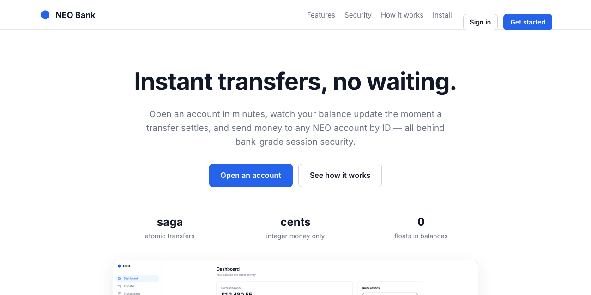
NEO Bank Full-stack banking demo: Go microservices, Cassandra, Kafka, React. Source -
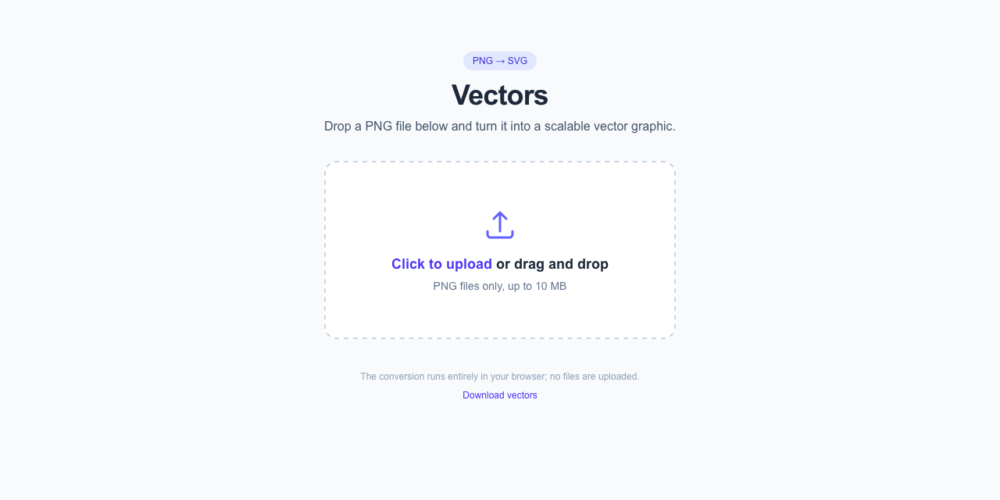
Vectors Turn PNG and JPEG images into clean SVG paths — entirely offline. Source